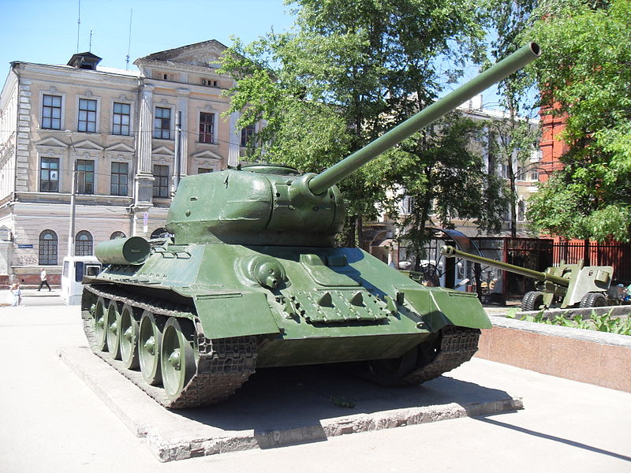
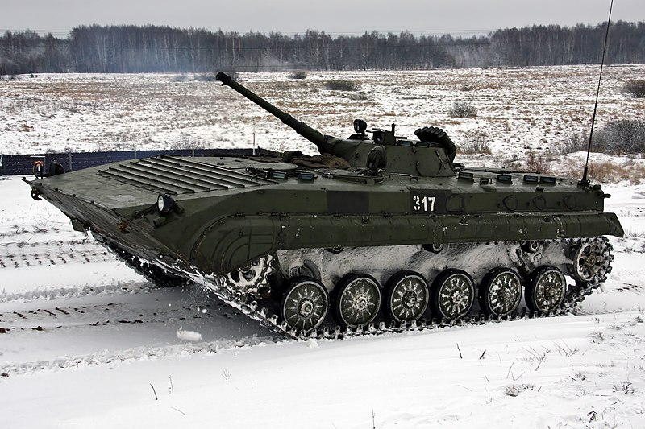
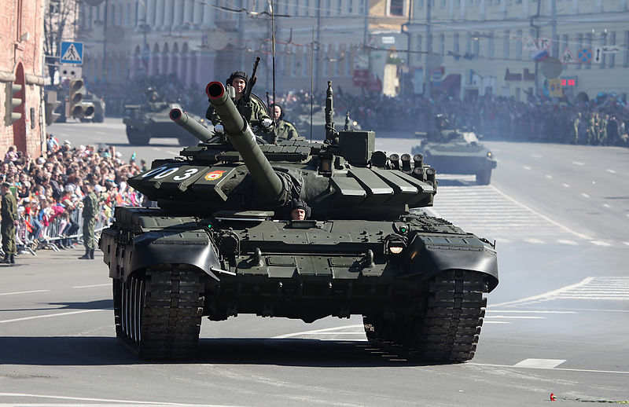

Бронетехника
Остин-Кегресс и Остин-Кегресс-Путиловец

- Разработчик: А. Кегресс, Путиловский завод
- Боевая масса: 5,3 т.
- Год принятия на вооружение: 1916 (1918)
- Применение: Гражданская война в России, подавление беспорядков в Германии, Война с Польшей 1919—1920 гг.
Первый в мире полугусеничный бронеавтомобиль, построенный на базе английского шасси, а для первого экземпляра — и английского кузова. Успешно испытан летом 1916 года, тогда же передан в серийное производство, но из-за революций выпуск первых серийных автомобилей уже на базе бронеавтомобиля с кузовом российского производства Остин-Путиловец состоялся только в 1918 году. Назван по фамилии создателя полугусеничного шасси - французского гражданина и российского военнослужащего, работавшего в это время в императорском гараже, где он и разработал своё изобретение.
Бронеавтомобили были сняты с вооружения в начале 1930-х годах, до настоящего времени ни одного экземпляра бронеавтомобиля этого типа с шасси Кегресса не сохранилось.
Средний танк Т-34

- Генеральный конструктор: М. И. Кошкин
- Боевая масса: до 32 т
- Год принятия на вооружение: 1939
- Применение: Великая Отечественная война и большое количество последующих конфликтов, включая Украинский кризис (ополчение) и войну в Йемене.
Советский средний танк Т-34 (производственное наименование А-34) многократно признавался ведущими экспертами из разных стран мира лучшим танком Второй мировой войны по совокупности показателей. Стал одним из символов страны и самых узнаваемых символов Победы в Великой Отечественной войне. Значительно повлиял на исход войны и на развитие мирового танкостроения. Выпущен огромной серией в нескольких модификациях, наиболее известными из которых является Т-34 образца 1940 года и Т-34-85. Вплоть до 2010-х годов состоит на вооружении многих небольших стран.
Танк был разработан в конце 30-х годов конструкторским бюро танкового отдела Харьковского завода № 183 на базе легких колёсно-гусеничных танков БТ и является модернизированной версией опытного танка А-32, который был испытан и принят для дальнейших доработок 19 декабря 1939 года. Позднее, 31 марта 1940 года, после устранения недостатков вышло постановление о серийном производстве танка уже под наименованием Т-34. Первые танки образца 1940 года имели шестигранную, усечённую кверху сварную башню из горячекатаных листов (в дальнейшем башни стали выпускать литые) и орудие калибра 76 мм. Боевая масса танка составляла 26 т.
На протяжении всей Великой Отечественной войны Т-34 подвергался постоянной модернизации, однако без серьёзных изменений, которые могли бы сказаться на темпах выпуска. Но с появлением у вермахта нового тяжёлого танка Т-VI «Тигр», конструкцию пришлось серьёзно изменить. Так, в 1944 году была разработана последняя версия танка — Т-34-85. Новый танк был укомплектован 85-мм орудием способным поражать танки противника на больших дистанциях. Изменилась также и конструкция башни, она стала более просторной, а форма сменилась на овальную. Экипаж увеличился с четырёх человек до пяти, а боевая масса составила 32,2 т. Таким образом, средний советский танк мог эффективно бороться с тяжёлыми немецкими, сводя на нет все усилия противника по достижению качественного превосходства в танковом вооружении.
Боевая машина пехоты БМП-1 
- Разработчик: КБ Челябинского тракторного завода (ГСКБ-2)
- Боевая масса: 13 т.
- принятия на вооружение: 1969 (серийное производство с 1966)>
- Применение: Конфликт на острове Даманский, Война Судного дня, Афганистан, Ливанская война, Ирано-Иракская война, Западная Сахара, Война в Персидском заливе, все войны на территории бывшего СССР, Ангола, Сирия, Ливия, Йемен и прочие
Основной танк Т-72

- Генеральный конструктор: В. Н. Венедиктов
- Боевая масса: 41,0 — 46,5 т
- Год принятия на вооружение: 1973
- Применение: Ирано-иракская война (1980—1988), Ливанская война (1982), Миротворческие операции в Шри-Ланке и Сомали, войны на постсоветском пространстве, а также многочисленные конфликты на территории Ливии, Ирака, Сирии, Судана и Югославии, Украинский кризис (обе стороны).
Основной танк Т-14

- Разработчик: Уралвагонзавод (УВЗ)
- Боевая масса: в пределах 55 т.
- Первая демонстрация: 2015
- Применение: танк находится в стадии гос. испытаний